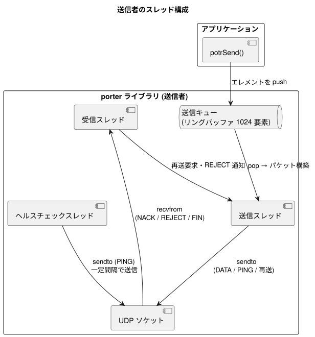
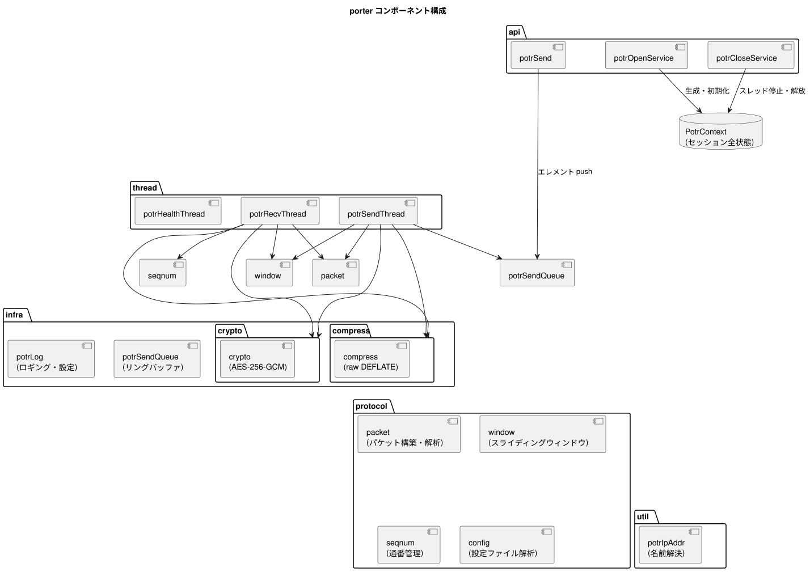

porter は、アプリケーションと UDP ソケット層の間に抽象レイヤーを置き、非同期送受信・再送制御・ヘルスチェックを透過的に提供します。
アプリケーションは potrOpenService() でサービスを開き、送信側は potrSend() を呼び出すだけで、内部スレッドが送受信・再送・ヘルスチェックをすべて担います。
porter は通信の参加者を 送信者 (SENDER) と 受信者 (RECEIVER) に区別します。
| 役割 | 説明 |
|---|---|
| SENDER | potrSend() でデータを送出する。ヘルスチェック PING を送信する。 |
| RECEIVER | 到着したパケットをコールバックで上位層へ渡す。NACK で再送を要求する。 |
1:1 (ユニキャスト) 通信では送信者 1 : 受信者 1 の構成となります。
1:N (マルチキャスト・ブロードキャスト) 通信では送信者 1 : 受信者 N の構成となります。

| スレッド | 役割 |
|---|---|
| 送信スレッド | 送信キューからエレメントを取り出し、DATA パケットを構築して全パスへ sendto する |
| 受信スレッド | NACK / REJECT / FIN パケットを受信し、再送処理または DISCONNECTED 発火を行う |
| ヘルスチェックスレッド | 最終送信時刻を監視し、一定間隔が経過したら PING パケットを送信する |
受信者が起動するスレッドは 受信スレッド 1 本のみ です。
受信スレッドが担う処理：
POTR_EVENT_DISCONNECTED 発火POTR_EVENT_DISCONNECTED 発火
porter の全状態は PotrContext 構造体 (PotrHandle の実体) に集約されます。
この構造体はアプリケーションには不透明 (opaque) であり、内部実装のみがアクセスします。
| カテゴリ | 保持する情報 |
|---|---|
| 設定 | サービス定義 (通信種別・アドレス・ポート・暗号化鍵) 、グローバル設定 (ウィンドウサイズ・ヘルスチェック間隔) |
| ソケット | 最大 4 パス分の UDP ソケット |
| スレッド | 受信・送信・ヘルスチェックスレッドハンドル |
| ウィンドウ | 送信ウィンドウ・受信ウィンドウ (各パケットのコピーを保持) |
| 送信キュー | ペイロードエレメントのリングバッファ (1024 要素) |
| セッション状態 | 自セッション ID / 相手セッション ID・開始時刻 |
| 接続状態 | health_alive (1: 疎通中、0: 未接続または切断) |
| ヘルスチェック | 最終送信時刻・最終受信時刻 (パス別) |
| フラグメントバッファ | フラグメント結合用バッファ (最大 65,535 バイト) |
| 圧縮バッファ | 圧縮・解凍作業バッファ (約 65 KB) |
| 暗号バッファ | 暗号化・復号作業バッファ (max_payload + 16 バイト) |
| NACK 重複抑制 | 直近 NACK のリングバッファ (8 要素) |
potrContext.h でプラットフォーム差異を抽象化し、上位層はプラットフォームを意識しません。
| 機能 | Linux | Windows |
|---|---|---|
ソケット型 (PotrSocket) |
int |
SOCKET |
| 無効ソケット値 | -1 |
INVALID_SOCKET |
スレッド型 (PotrThread) |
pthread_t |
HANDLE |
ミューテックス型 (PotrMutex) |
pthread_mutex_t |
CRITICAL_SECTION |
条件変数型 (PotrCondVar) |
pthread_cond_t |
CONDITION_VARIABLE |
| ソケット初期化 | 不要 | WSAStartup() |
| ソケットクローズ | close() |
closesocket() |
| 単調時間 (ヘルスチェック用) | clock_gettime(CLOCK_MONOTONIC, ...) |
GetTickCount64() |
| カレンダー時刻 (セッション ID 用) | clock_gettime(CLOCK_REALTIME, ...) |
GetSystemTimeAsFileTime() |
呼び出し規約 (POTRAPI) |
(なし) | __stdcall |
暗号化 (crypto モジュール) |
OpenSSL EVP AES-256-GCM | Windows CNG (BCrypt) AES-256-GCM |
アプリ
| potrSend(data, len, flags)
▼
[圧縮] --- flags に POTR_SEND_COMPRESS が指定された場合、メッセージ全体を raw DEFLATE 圧縮
|
[フラグメント化] --- データが max_payload を超える場合に分割
| 各フラグメントにエレメントヘッダー (6 バイト) を付与
|
[送信キュー push] --- ペイロードエレメントとして積む
| POTR_SEND_BLOCKING なし: キュー満杯時は空き待ち
| POTR_SEND_BLOCKING あり: 事前に drained 待ち → 積む → sendto 完了待ち
▼
[送信スレッド] --- キューから pop
| 複数エレメントを 1 パケットにパッキング
| seq_num 付与・送信ウィンドウに登録
| encrypt_key が設定されている場合: AES-256-GCM 暗号化
▼
[UDP sendto] --- 全パス (最大 4 経路) に並列送信[UDP recvfrom] --- 各パスのソケットから受信
|
[検証] --- service_id 照合 → 不一致は破棄
| 送信元 IP フィルタ → 不一致は破棄
| セッション識別 → 旧セッションは破棄、新セッションはウィンドウリセット
| POTR_FLAG_ENCRYPTED が立っている場合: AES-256-GCM 復号・認証タグ検証
| (認証失敗パケットは即座に破棄)
|
[種別振り分け]
+- DATA --→ 受信ウィンドウへ格納
| 欠番検出 → NACK 送出
| ↓ 連続した通番が揃ったら順番に取り出し
| フラグメント結合・解凍
| ↓
| コールバック POTR_EVENT_DATA
|
+- PING --→ 最終受信時刻を更新 (返信なし)
|
+- FIN --→ POTR_EVENT_DISCONNECTED 発火
|
+- NACK --→ 送信ウィンドウから該当パケットを検索
| 存在すれば再送 / 存在しなければ REJECT 送出
|
+- REJECT -→ POTR_EVENT_DISCONNECTED 発火 (受信者側)